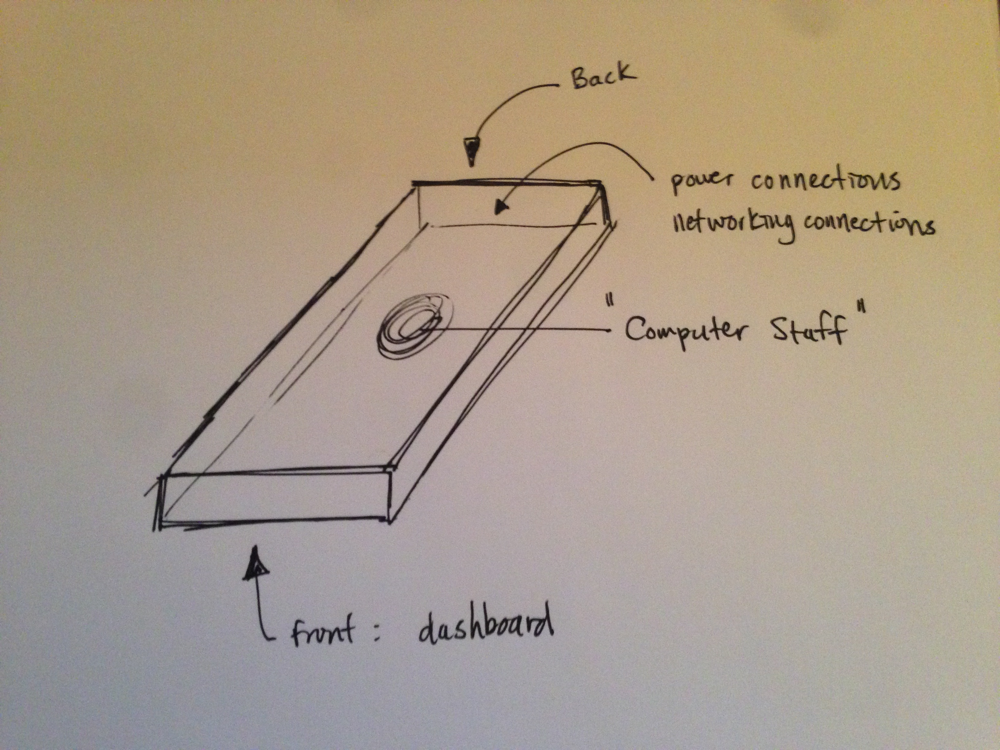
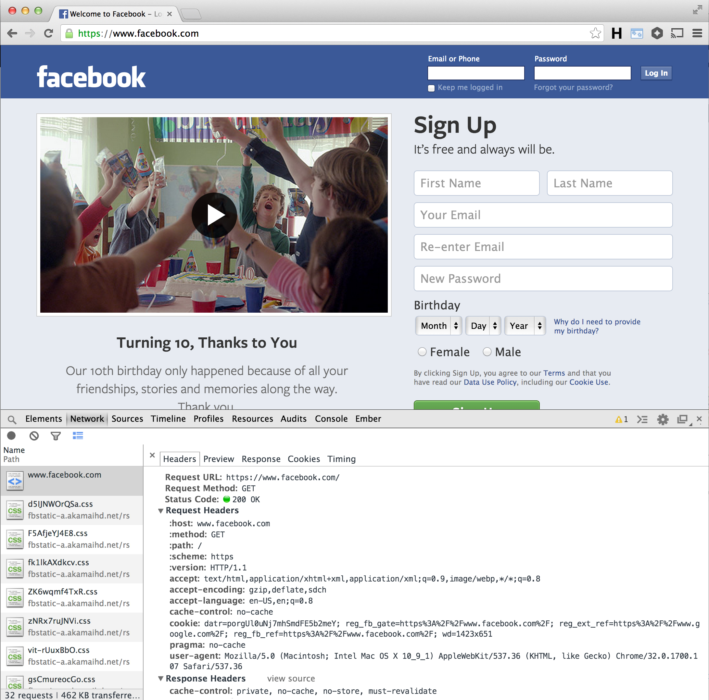

Welcome!
If you have not done so already, please download Sublime Text 2.
Modify your settings to turn off auto correct, and tab completion.
Insert the following code into your preferences & save
- "tab_completion": false,
- "auto_complete": false
Ask a TA if you need help setting this up.
Intro to Servers
Session 1
Class notes
Thanks to our sponsor
4 sessions
Session 1 - What are servers? What is the internet?
Session 2 - How to interact with servers
Session 3 - How to setup a website
Session 4 - How to use Vagrant
Real Question
What am I going to understand?
We want you to feel comfortable:
- Talking about servers
- Using SSH to interact with servers
- Setting up real HTML and Javascript websites
- Dreaming about servers
What is a server?
Server rack at Google datacenter
http://www.google.com/about/datacenters/gallery/images/_2000/PRY_20.jpg
Server Rack
Server
Server is an "industrian" version of a Desktop
More practically
a server:
- is computer in a datacenter
- has an IP address
- can be virtualized
What do severs do?
First, we need to ask ...
How does the internet work?
How does the internet work?
Send and Reveive information over HTTP
But much bigger
search on google for "mark zukerberg
click on Mark's facebook page

Opeations in order
- HTTP Request. google.com
- HTTP Response. google.com
- HTTP Request. Search for "Zukerberg profile page"
- HTTP Response. Search results. Click on 1st result
- HTTP Request. facebook.com/zuck
- HTTP Response. Mark's profile page
DNS - domain name server
translates URLs (facebook.com) into IP addresses (1.2.3.4)
What do servers do?
Servers and programs running on them
receive HTTP requests and
send back HTTP responses
HTTP Requests in the Wild
HTTP Request Headers
=> GET / HTTP/1.1
Host: facebook.com
Accept: text/html,application/xhtml+xml,application/xml; ...
Connection: keep-alive
Cache-Control: max-age=0
User-Agent: Mozilla/5.0 (Macintosh; Intel Mac OS X 10_9_1) ...
GET - HTTP verb or method
/ - url path
HTTP/1.1 - http version being used
HTTP Request Headers
GET / HTTP/1.1
=> Host: facebook.com
=> Accept: text/html,application/xhtml+xml,application/xml; ...
=> Connection: keep-alive
Cache-Control: max-age=0
User-Agent: Mozilla/5.0 (Macintosh; Intel Mac OS X 10_9_1) ...
Host - the website URL
Accept - accepted file types for ther HTTP Response
Connection - connection type, there's options
HTTP Request Headers
GET / HTTP/1.1
Host: facebook.com
Accept: text/html,application/xhtml+xml,application/xml; ...
Connection: keep-alive
=> Cache-Control: max-age=0
=> User-Agent: Mozilla/5.0 (Macintosh; Intel Mac OS X 10_9_1) ...
Cace-Control - cache or save files (images) locally
User-Agent - Browser version sending request
MORE Request Headers
33 total request headers
What should I know about headers?
HTTP Headers enable browers to pro-actively communicate info to web servers
Covered HTTP Requests ...
Send and Reveive information over HTTP
HTTP Response
HTTP/1.1 200 OK
Cache-Control: private, no-cache, no-store, must-revalidate
Expires: Sat, 01 Jan 2000 00:00:00 GMT
Pragma: no-cache
X-Content-Type-Options: nosniff
X-Frame-Options: DENY
X-XSS-Protection: 0
Set-Cookie: datr=mSX0Uo094Zdi2_Kyv9eXrWH3; expires=Sun, 07-Feb-2016 00:15:21
Content-Type: text/html; charset=utf-8
X-FB-Debug: mlWzOHMacaw6GPk0waEL1JTSHnf9sMZcBC/3CKrCW6k=
Date: Fri, 07 Feb 2014 00:15:22 GMT
Connection: keep-alive
<!DOCTYPE html>
<html lang="en" id="facebook" class="no_js"> ... facebook ... </html>
Response is able direct how information is used
What should I know going forward?
- URLs are really IP addresses
- Servers are simple computes in big warehouses
- HTTP requests and responses are just text files
Where do servers come from?
~ The Cloud ~